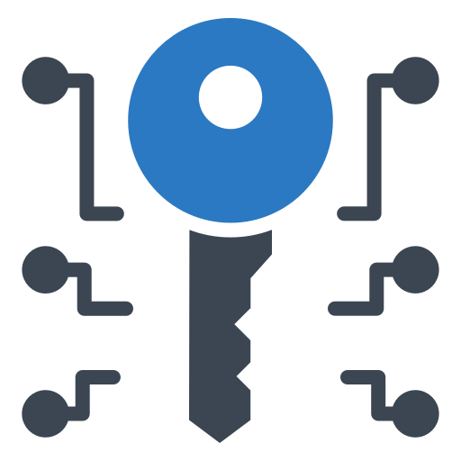

tema2-2b¿Que son los barridos de pings?Consiste en la realización de inspecciones y búsquedas
exhaustivas encaminadas a la detección, localización y, si es requerido, la eliminación de dispositivos
espía.
Bases de datos (DB)Una base de datos es un conjunto de datos pertenecientes a un mismo
contexto y almacenados
sistemáticamente para su posterior uso.Este sistema es uno de los más atacados actualmente por "HACKERS" y
"CRACKERS", con el fin
de extraer infomación confidencial en empresas y entidades públicas.Barridos electrónicosEl barrido electrónico es una contramedida de seguridad. Consiste en
la búsqueda de aparatos
de espionaje activos, sistemas de escuchas y pinchazos telefónicos.

Barrido de pingsConsiste en hacer ping sistemáticamente a todas las direcciones de
red
en un rango o una
subred determinados.Se puede asimilar con una revisión a una sección de una guía
telefónica y llamar a cada
número para ver quién atiende.¿Que es un trazado de rutas?Al realizar un trazado de rutas conseguimos conocer el camino
exacto que sigue el paquete a lo largo de su viaje por la red suministrándonos una información muy útil
para
muchos casos.Actividad